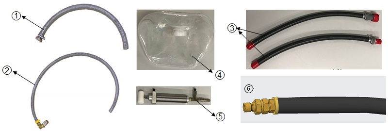

- 00000018WIA30316840GYZ
- id_201506111.6
- Oct 29, 2025, 1:06:13 PM
Draining the Coolant
Use this procedure to drain coolant from the SBGD, ISR , 18KW Chiller, ICC.
Prerequisites
| Personnel requirements | ||||
|---|---|---|---|---|
| Part | Required persons | Preliminary requirements | Procedure | Finalization |
| SBGA / SBPS | 1 | - | 30 minutes | - |
| MTD / RFM / OM | 1 | - | 30 minutes | - |
| 18KW Chiller pump | 1 | - | 30 minutes | - |
| 18KW Chiller tank | 1 | - | 30 minutes | - |
| Gradient Coil | 1 | - | 30 minutes | - |
| ICC pump | 1 | - | 30 minutes | - |
| ICC tank | 1 | - | 30 minutes | - |
| Tools and test equipment | ||||
|---|---|---|---|---|
| Item | Quantity | Part number | Manufacturer | |
| 1 | Drain Hose 1/2“ for ICC/Chiller Pump | 1 | 5802109 | |
| 2 | Coolant Hose for SBGD Drain and Chiller/ICC Tank Drain | 2 | 5802110 | |
| 3 | Coolant Hose for ISR Drain | 1 | 5802111 and 5802112 | |
| 4 | Flexible Water Tank | 1 | 5342981 | |
| 5 | Hand Pump | 1 | 5604427 | |
| 6 | Drain hose 0.5 inch with Parker Coupler for DI kit | 1 | 5868173 | |
Note All the tools shipped with system, remember to put them in chiller/ICC after use.

| Required conditions |
|---|
|
| Safety |
|---|
|
Before working in any GE HealthCare MR suite or doing any GE HealthCare service procedure, you must:
If you have any safety concerns at any time, do not begin work or immediately stop work and move to a safe location. Immediately contact your supervisor or site safety officer for instructions on how to proceed. |
| Warning | |
|---|---|
| CAUTION | |
|---|---|
| Important | |
|---|---|
- Draining coolant from chiller/ICC pump and tank.
- Draining coolant from SBGD (SBGA, SBPS).
- Draining coolant from ISR (RFM, OM, MTD).
Draining coolant from chiller pump
About this task
| CAUTION | |
|---|---|